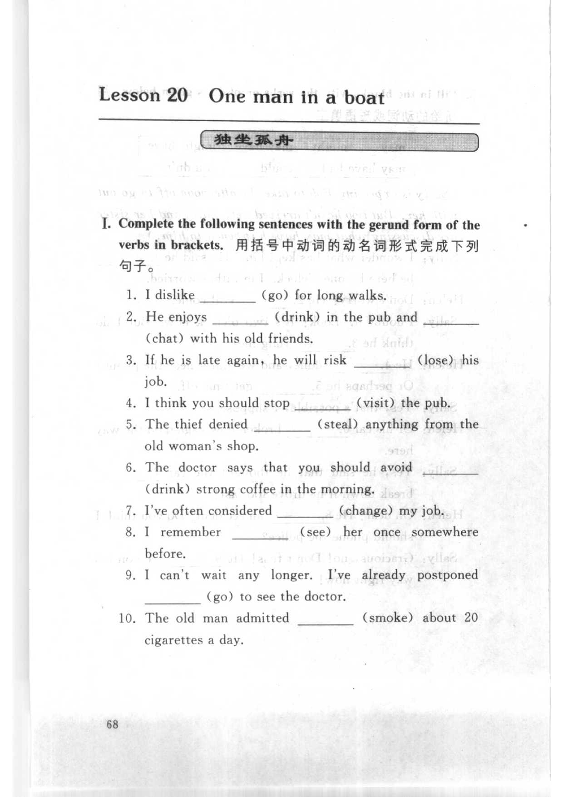
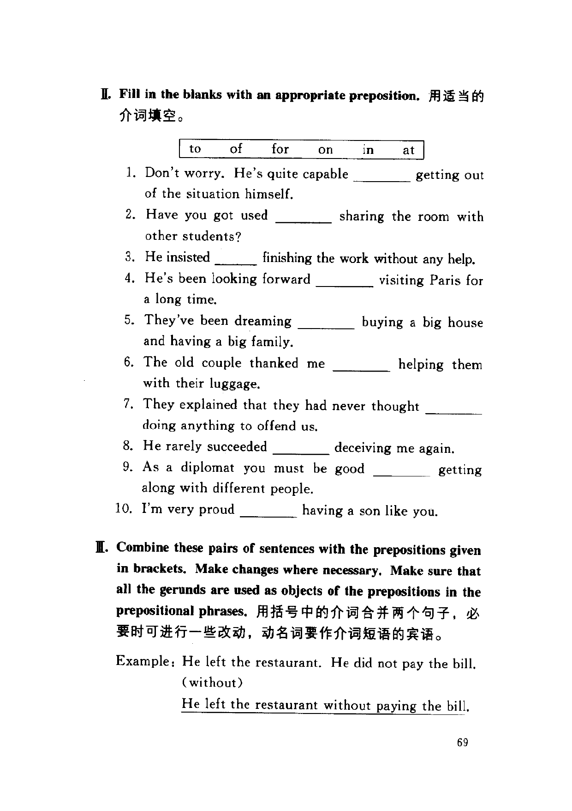
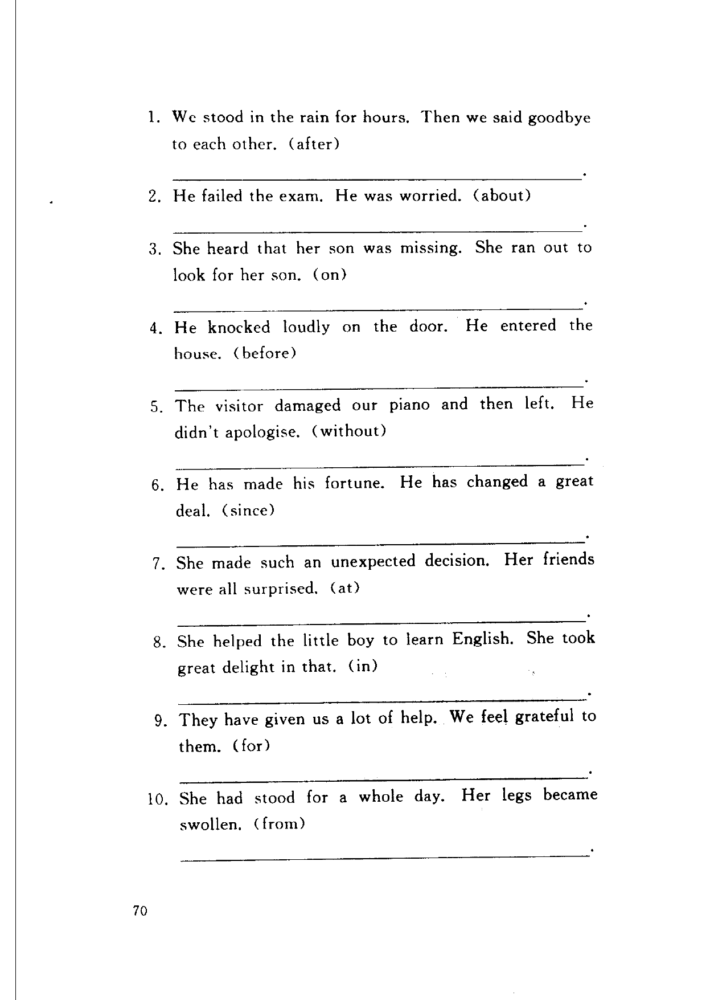

Grammar exercises · 语法练习
I. Complete the following sentences with the gerund form of the verbs in brackets.
用括号中动词的动名词形式完成下列句子。
-
I. Gerund — I dislike (go) for long walks.
-
I. Gerund — He enjoys (drink) in the pub and (chat) with his old friends.
-
I. Gerund — If he is late again, he will risk (lose) his job.
-
I. Gerund — I think you should stop (visit) the pub.
-
I. Gerund — The thief denied (steal) anything from the old woman's shop.
-
I. Gerund — The doctor says that you should avoid (drink) strong coffee in the morning.
-
I. Gerund — I've often considered (change) my job.
-
I. Gerund — I remember (see) her once somewhere before.
-
I. Gerund — I can't wait any longer. I've already postponed (go) to see the doctor.
-
I. Gerund — The old man admitted (smoke) about 20 cigarettes a day.
II. Fill in the blanks with an appropriate preposition.
用适当的介词填空。
to · of · for · on · in · at
-
II. Preposition — Don't worry. He's quite capable getting out of the situation himself.
-
II. Preposition — Have you got used sharing the room with other students?
-
II. Preposition — He insisted finishing the work without any help.
-
II. Preposition — He's been looking forward visiting Paris for a long time.
-
II. Preposition — They've been dreaming buying a big house and having a big family.
-
II. Preposition — The old couple thanked me helping them with their luggage.
-
II. Preposition — They explained that they had never thought doing anything to offend us.
-
II. Preposition — He rarely succeeded deceiving me again.
-
II. Preposition — As a diplomat you must be good getting along with different people.
-
II. Preposition — I'm very proud having a son like you.
III. Combine these pairs of sentences with the prepositions given in brackets. Make changes where necessary. Make sure that all the gerunds are used as objects of the prepositions in the prepositional phrases.
用括号中的介词合并两个句子，必要时可进行一些改动，动名词要作介词短语的宾语。
Example: He left the restaurant. He did not pay the bill. (without)
He left the restaurant without paying the bill.
-
III. Combine — We stood in the rain for hours. Then we said goodbye to each other. (after)
-
III. Combine — He failed the exam. He was worried. (about)
-
III. Combine — She heard that her son was missing. She ran out to look for her son. (on)
-
III. Combine — He knocked loudly on the door. He entered the house. (before)
-
III. Combine — The visitor damaged our piano and then left. He didn't apologise. (without)
-
III. Combine — He has made his fortune. He has changed a great deal. (since)
-
III. Combine — She made such an unexpected decision. Her friends were all surprised. (at)
-
III. Combine — She helped the little boy to learn English. She took great delight in that. (in)
-
III. Combine — They have given us a lot of help. We feel grateful to them. (for)
-
III. Combine — She had stood for a whole day. Her legs became swollen. (from)
Original images · 原图对照
Expand a page to compare it with the transcription. Open the original in a new tab to zoom in.
展开原图核对文字，也可以在新标签页打开原图放大查看。
Book page 1 · Exercise I (gerund form, items 1–10)
Open original · 打开原图 ↗ Download original · 下载原图


Book page 2 · Exercise II (prepositions, items 1–10) and Exercise III (combine, example)
Open original · 打开原图 ↗ Download original · 下载原图


Book page 3 · Exercise III (combine, items 1–10)
Open original · 打开原图 ↗ Download original · 下载原图


Your notes and answers
Use this space for longer responses or exercises that do not have an individual answer box.